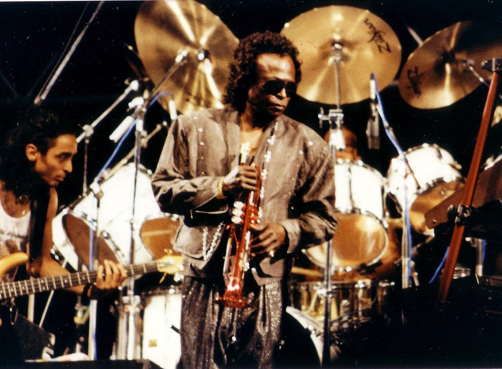

Jazz music was born in the late 19th century in New Orleans, Louisiana. It was a combination of African and European music traditions.
HISTORY OF JAZZ
The first jazz records are released by the Original Dixieland Jass Band, which claims to have made the first ever jazz recordings. Jazz begins to spread from New Orleans to major urban centers like Chicago and New York.

The Jazz Age blossoms, characterized by the popularity of speakeasies during Prohibition. Big names like Louis Armstrong transform the jazz scene with solo performances that highlight instrumental virtuosity.

The Swing Era peaks, marked by big bands and dance halls. Figures like Duke Ellington, Benny Goodman, and Count Basie lead this era with large ensembles and highly arranged music.

Cool Jazz and Hard Bop develop as subtler and more nuanced forms of bebop, with artists like Miles Davis and John Coltrane at the forefront.

Fusion or Jazz-Rock becomes popular, led by musicians like Miles Davis and later Weather Report. This genre combines elements of rock, funk, and R&B with traditional jazz.
Jazz Fusion continues to evolve, and Latin Jazz becomes more prominent with artists like Tito Puente and later, Arturo Sandoval.
Jazz continues to evolve and integrate with other music forms. Artists like Kamasi Washington and Esperanza Spalding represent new directions in jazz music, including influences from hip-hop, electronic music, and global sounds.